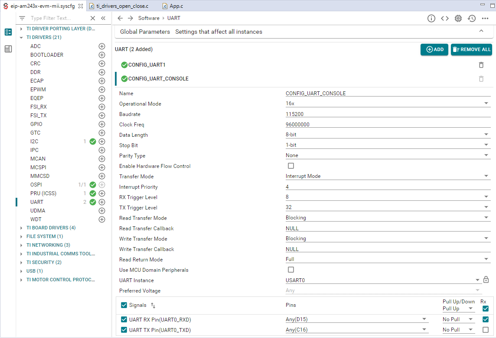

EtherNet/IP™ Adapter3.02.00 |
 |


|
EtherNet/IP™ Adapter3.02.00 |
|
|
This section discusses example applications that are shipped as part of the EtherNet/IP Adapter SDK. With this release a new directory structure is introduced that allows for adding further examples demontrating basic implementations of additional device profiles according to the ODVA specifications.
At the time of release, a code example is provided for a CIP Generic Device according to Volume 1 of the CIP NETWORKS LIBRARY. The Generic Device profile does not specify any instances of the Assembly Object or the type of application objects necessary for device operation. This portion of the device profile must be supplied by the product developer and in this example focuses on digital I/O functionality via an LED array available on the evaluation board. The Generic Device example does not cover CIP Sync functionality.
The example itself is primarily implemented in the files app.c and deviceProfiles\genericDevice\appGenericDevice.c with board specific functionality located in appNV.c and below board\am243x -evm\freertos or board\am243x -lp\freertos.
A simplified implementation of a HTTP server is included in appWebServer.c and the associated header files.
The primary task of main is the initialization of the Texas Instruments driver porting layer (DPL), the selection of the PRU-ICSS instance, PHY devices, and the configuration of the task priorities. After this initial setup, a task is constructed that implements the CIP and EtherNet/IP functionality.
This task, implemented in function EI_APP_mainTask, initializes and opens all peripheral drivers, depending on the SysConfig settings for the project. To enable UART console output, verify that your SysConfig settings are as follows:

These settings result in the following code in ti_drivers_open_close.c including the declaration of the handle gUartHandle that is later used in the example code to access the UART.
In EI_APP_maintTask (appGenericDevice.c) CUST_DRIVERS_init is called to initialize different drivers suh as QSPI, I2C, and UART. Furthermore a corresponding callback function for UART output can registered by calling OSAL_registerPrintOut. In the callback function strings are then written to the console output by calling UART_write from the Texas Instruments driver library:
EI_APP_mainTask then proceeds with executing EI_APP_init to set up the EtherNet/IP Adapter. After the initialization, it enters a loop that cyclically processes the Ethernet/IP stack.
The main entry point is implemented in app.c and the EI_APP_mainTask function in appGenericDevice.c.
In the EI_APP_init initialization function, calls to the EtherNet/IP adapter API are made the create the internal structures required by the EtherNet/IP stack. EI_API_ADP_new creates the new adapter, and in EI_API_ADP_setErrorHandlerFunc the stack error handler is registered.
Based on the definition of TIME_SYNC in the predefined symbols section of Code Composer Studio support for the Time Sync functionality will become available. Depending on an equivalent test for QUICK_CONNECT quickconnect functionality will be enabled.
After further application specific initialization, a new CIP node is created by calling EI_API_CIP_NODE_new. Note that this function must be called after EI_API_ADP_new.
EI_APP_init is implemented in app.c.
The function EI_APP_stackInit performs initialization and starting of the PRU firmware. This function is implemented in app.c.
EI_APP_cipCreateCallback creates callback functions for non-volatile data storage and for reset services. Note that the callback function itself taking care of non-volatile data is implemented in appNV.c.
Finally, CIP specific content, such as classes, instances, attributes, and assemblies, is created in EI_APP_cipSetup. Together with EI_APP_cipGenerateContent this function will be that requires adaptation by the end user, depending on the device functionality that is to be implemented.
Also, the created attributes are added to the assemblies for cyclic CIP IO data exchange.
Starting with version 2.1, the EtherNet/IP stack contains an example how to implement a small HTTP server application. The corresonding code can be found in the files appWebServer.c, appWebServer.h, and appWebServerData.h. The HTML definitions for the page layout are contained in appWebServerData.h.
The web server and the corresponding background task are enabled by adding CPU_LOAD_MONITOR == 1 to the list of predefined symbols in Code Composer Studio.
 1.8.17
1.8.17